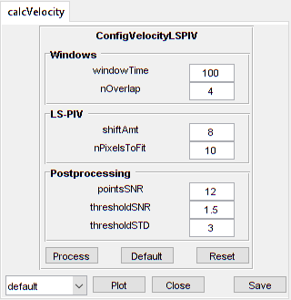

LineScanVel
Analyse line scan images of vessel velocities
Contents
Usage
OBJ = LineScanVel(NAME, RAWIMG, CONFIG, ISDS, COLS)
Arguments
- NAME is the name for this LineScanVel object.
- RAWIMG is the RawImg object that will be used to create the LineScanVel object.
- CONFIG contains the configuration parameters needed for the calcVelocity object.
- ISDS specifies whether the streaks to analyse are dark (i.e. negatively labelled) or bright (i.e. positively labelled).
- COLS specifies the left and right columns that will form the edges of the RawImg data to use in the calculation.
Details
LineScanVel objects are used to analyse the velocity from line scan images acquired by scanning along to the vessel axis. Typically, the blood plasma will be labelled by a fluorescent marker, like a dextran conjugated fluorophore (e.g. FITC, as in the figure below), but the method also works with labelled red blood cells (RBCs).

See Also
Examples
The following examples require the sample images and other files, which can be downloaded manually, from the University of Zurich website (http://www.pharma.uzh.ch/en/research/functionalimaging/CHIPS.html), or automatically, by running the function utils.download_example_imgs().
Create a LineScanVel object interactively
The following example will illustrate the process of creating a LineScanVel object interactively, starting with calling the constructor.
% Call the LineScanVel constructor
lsv01 = LineScanVel()
Since no RawImg has been specified, the first stage is to select the type of RawImg to create. Press three and then enter to select the SCIM_Tif.
----- What type of RawImg would you like to load? -----
>> 1) BioFormats
2) RawImgDummy
3) SCIM_TifSelect a format: 3
Then, use the interactive dialogue box to select the raw image file linescanvel_scim.tif, which should be located in the subfolder tests>res, within the CHIPS root directory.

A warning may appear about the pixel aspect ratio, but this is not relevant for LineScanVel images.
Use the interactive dialogue box to select the dummy calibration (calibration_dummy.mat):

The next stage is to define the 'meaning' of the image channels. The first channel represents the blood plasma. Press one and then enter to complete the selection.
----- What is shown on channel 1? -----
>> 0) <blank>
1) blood_plasma
2) blood_rbcsAnswer: 1
The next stage is to specify which velocity calculation algorithm should be used. In this case we will choose the Radon transform method. Press two and then enter to complete the selection
----- What type of velocity calculation would you like to use? -----
>> 1) CalcVelocityLSPIV
2) CalcVelocityRadonSelect a format: 2
The final stage is to select the left and right limits of the image to use for velocity calculations. This can be useful to exclude the edges where there can be artefacts associated with the scan mirrors changing speed and/or direction.

We have now created a LineScanVel object interactively.
lsv01 =
LineScanVel with properties:
plotList: [1x1 struct]
calcVelocity: [1x1 CalcVelocityRadon]
colsToUseVel: [17 112]
isDarkStreaks: 1
state: 'unprocessed'
name: 'linescanvel_scim'
rawImg: [1x1 SCIM_Tif]The process is almost exactly the same to create an array of LineScanVel objects; when the software prompts you to select one or more raw images, simply select multiple images by using either the shift or control key.
Prepare a RawImg for use in these examples
% Prepare a rawImg for use in these examples fnRawImg = fullfile(utils.CHIPS_rootdir, 'tests', 'res', ... 'linescanvel_scim.tif'); channels = struct('blood_plasma', 1); fnCalibration = fullfile(utils.CHIPS_rootdir, 'tests', 'res', ... 'calibration_dummy.mat'); calibration = CalibrationPixelSize.load(fnCalibration); rawImg = SCIM_Tif(fnRawImg, channels, calibration);
Opening linescanvel_scim.tif: 100% [===============================]
Create a LineScanVel object without any interaction
% Create a LineScanVel object without any interaction nameLSV02 = 'test LSV 02'; configRadon = ConfigVelocityRadon(); isDarkStreaks = []; colsToUse = [17 112]; lsv02 = LineScanVel(nameLSV02, rawImg, configRadon, ... isDarkStreaks, colsToUse)
lsv02 =
LineScanVel with properties:
plotList: [1x1 struct]
calcVelocity: [1x1 CalcVelocityRadon]
colsToUseVel: [17 112]
isDarkStreaks: 1
state: 'unprocessed'
name: 'test LSV 02'
rawImg: [1x1 SCIM_Tif]
Create a LineScanVel object array
% Create the RawImg array first
rawImgArray(1:3) = copy(rawImg);
rawImgArray = copy(rawImgArray)
rawImgArray =
1x3 SCIM_Tif array with properties:
filename
isDenoised
isMotionCorrected
metadata_original
name
rawdata
t0
metadata
% Then create a LineScanVel object array lsvArray = LineScanVel('test LSV Array', rawImgArray, configRadon, ... isDarkStreaks, colsToUse)
lsvArray =
1x3 LineScanVel array with properties:
plotList
calcVelocity
colsToUseVel
isDarkStreaks
state
name
rawImg
Create a LineScanVel object with a custom config
% Create a LineScanVel object with a custom config configLSPIV = ConfigVelocityLSPIV('shiftAmt', 8, 'windowTime', 100, ... 'thresholdSNR', 1.5); lsv03 = LineScanVel('test LSV 03', rawImg, configLSPIV, ... isDarkStreaks, colsToUse); confVel = lsv03.calcVelocity.config
confVel =
ConfigVelocityLSPIV with properties:
windowTime: 100
nOverlap: 4
shiftAmt: 8
nPixelsToFit: 10
pointsSNR: 12
thresholdSNR: 1.5000
thresholdSTD: 3
Process a scalar LineScanVel object
% Process a scalar LineScanVel object
lsv03 = lsv03.process();
Calculating velocity: 100% [=======================================]
Process a LineScanVel object array (in parallel)
% Process a LineScanVel object array (in parallel). % This code requires the Parallel Computing Toolbox to run in parallel useParallel = true; lsvArray = lsvArray.process(useParallel); lsvArray_state = {lsvArray.state}
Processing array: 100% [===========================================]
lsvArray_state =
'processed' 'processed' 'processed'
Plot a figure showing the output
% Plot a figure showing the output hFig03 = lsv03.plot(); set(hFig03, 'Position', [50, 50, 600, 700])
Produce a GUI to optimise the parameters
% Produce a GUI to optimise the Radon transform parameters
hFigOpt03 = lsv03.opt_config();
 Output the data
% Output the data. This requires write access to the working directory fnCSV03 = lsv03.output_data('lsv03', 'overwrite', true); fID03 = fopen(fnCSV03{1}, 'r'); fileContents03 = textscan(fID03, '%s'); fileContents03{1}{1:5} fclose(fID03);
ans = time,velocity,yPosition,pixelShift,estSNR,maskSNR,maskSTD,mask ans = 0.050,4.441,NaN,22.739,2.713,FALSE,FALSE,FALSE ans = 0.075,4.352,NaN,22.285,2.884,FALSE,FALSE,FALSE ans = 0.100,4.760,NaN,24.371,2.490,FALSE,FALSE,FALSE ans = 0.125,5.267,NaN,26.966,2.406,FALSE,FALSE,FALSE